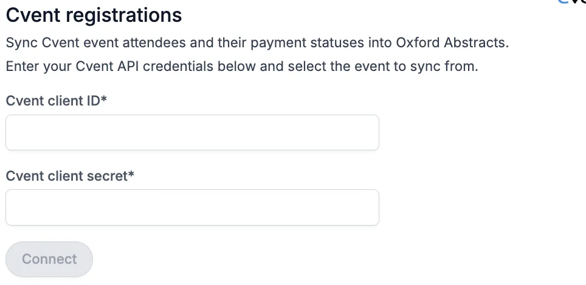

Integrating Oxford Abstracts and Cvent
Learn how to export registration data from Cvent and import it into Oxford Abstracts.#
On the left-hand menu, click on Advanced > Integrations > click on the connect button under Cvent.
You’ll need to add your Cvent Client ID and Cvent Client Secret to the box and click the connect button.

How to connect to Cvent#
Create a workspace
- Go to the this page to create a workspace.
- Give the workspace any name and select the "event" permissions.
- Click Save to create the workspace.
Invite a developer
- Go to the invite developers page.
- Add the email address of the developer you want to invite. You can use your own email for this.
- Add the developer to the workspace you previously created.
- Click Send to send the invitation.
Create an Application
- Go to the create application page. You may be asked to sign in with your developer email.
- Select Machine to Machine as the application type.
- Give the application any name.
- Select the following scopes:
- event/events:read
- event/attendees:read
-
event/orders:read
-
Click Save to create the application.
Copy your Client ID and Secret
After creating the application, go to the applications page.
There, you will be shown your Client ID and Client Secret.
Copy these values, paste them into the fields above and click Connect.
Select your event and sync
After connecting, select the Cvent event to sync registrations from.
Registrations will be synced automatically every 15 minutes.
If you need further support, please contact our Support Team via this Contact Form.
Did this page solve it?
Thanks — this helps us fix it.
Didn't solve it? Ask our support team
No question is too small, and there's no charge for asking. Raise a ticket and someone who knows the software will pick it up.